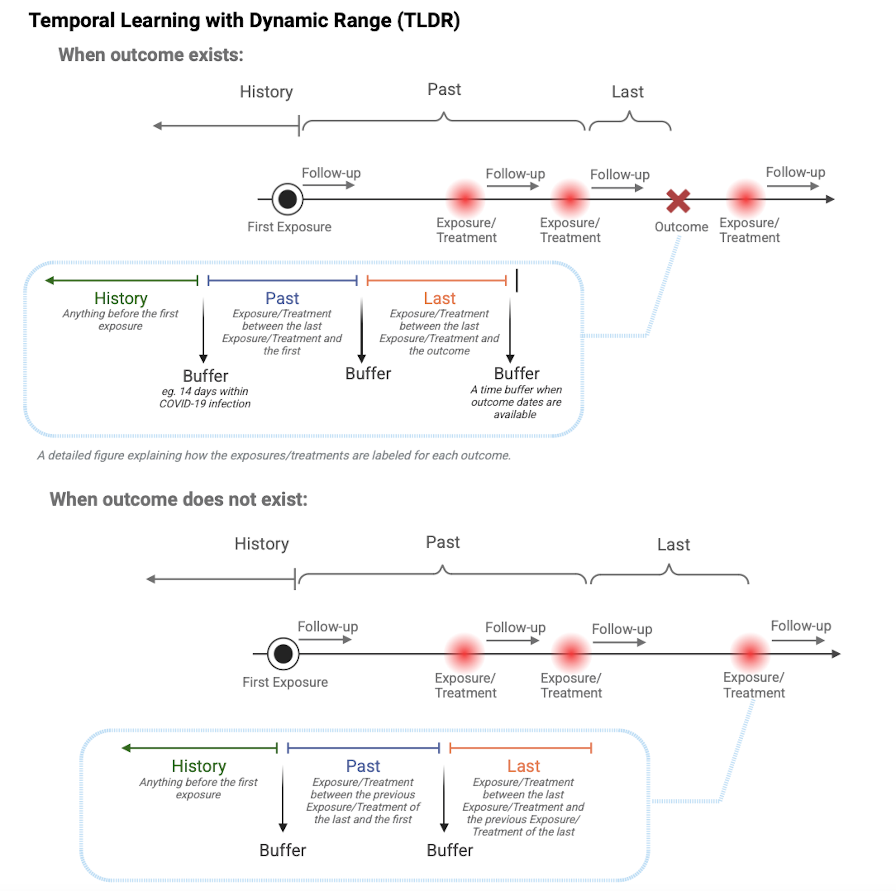

Skipping install of 'mlho' from a github remote, the SHA1 (8c32ca8d) has not changed since last install.
Use `force = TRUE` to force installation
# load MLHO, afterwards source the MSMR.lite.R file to overwrite the MSMR.lite function# in the package with the updated one (the encounter functionality is only available in the R file)library(mlho)#load and install required dependeciespacman::p_load(data.table, devtools, backports, Hmisc, tidyr,dplyr,ggplot2,plyr,scales,readr, httr, DT, lubridate, DALEX, tidyverse,reshape2,foreach,doParallel,caret,gbm,lubridate,praznik)library(counterfactuals)
Warning: package 'counterfactuals' was built under R version 4.3.3
library(iml)
Prepare the data
We load several datasets from the MLHO package, including incident data and demographic information.
dbmart consists of patient ID (patient_num) and associated phenotypes (phenx). Each patient can have multiple features, including different diagnostic events or conditions.
labelDT includes patient ID (patient_num), the start date of each event (start_date), and a binary label (label) indicating the outcome of interest.
dems contains dempgraphic information for each patient.
Splitting data into training and testing sets using a 70-30 ratio
We extract a unique list of “patient_num” from dbmart. Using the list of unique patient ID, we randomly select 30% of these patients to include in our test set.
After splitting the data into training and testing sets, the next step is to transform the data to ensure that the data aligns with the requirements of the modeling functions in the MLHO package.
dat.train <-subset(dbmart,!(dbmart$patient_num %in%c(test_ind)))data.table::setDT(dat.train)#values must be in column named valuedat.train[,value :=1]uniqpats.train <-c(as.character(unique(dat.train$patient_num)))
We use the MSMR.lite function from the MLHO package to perform a series of transformations and feature selections by labeling each feature by categorizing them to “history”, “past”, and “last”. The parameters include options for sparsity, use of the joint mutual information criterion (jmi), the number of top features to select (topn), and others that influence how the data is processed and analyzed.

The figure above explains how the features are labeled in MSMR.lite. Each patient’s data is filtered to process medical encounters sequentially. Events before the first encounter are labeled as “history.” For each encounter, data from the current to the last encounter are labeled as “last,” and if there is a previous encounter, data from the last encounter to the previous one are labeled as “past.” The buffer parameter gives flexibility to add a time interval within the infection period. For example, a buffer can be the 14 days of COVID-19 infection by each time label.
Once the data is labeled, all labels (history, past, last) are merged and reformatted into a wide format, where each patient row summarizes counts of each label.
MLHO.dat <- dat.trainlabels = labelDTpatients <- uniqpats.trainbinarize=Tsparsity=0.05## Sample size * sparsity. Don't pick a too small value to avoid overfittingjmi=TRUEtopn=50patients <- uniqpats.trainmulticore=TencounterLevel=TvaluesToMerge = FtimeBufffer=c(h=0,p=0,l=0,o=-30)dat.train <-MSMR.me(MLHO.dat, labels, binarize, sparsity, jmi, topn, patients <- uniqpats.train,multicore=FALSE,encounterLevel=TRUE,valuesToMerge =TRUE, timeBufffer)
We repeat the data processing and transformation again on the test set.
dat.test <-subset(dbmart,dbmart$patient_num %in%c(test_ind))uniqpats.test <-c(as.character(unique(dat.test$patient_num)))# remove phenx not required to create the encounter based phenx # (remove _last, _past and _history from the colnames to determine the phenxs)dat.train.colnames <-vapply(strsplit(colnames(dat.train),"_"),`[`, 1, FUN.VALUE=character(1))dat.test <-subset(dat.test,dat.test$phenx %in% dat.train.colnames)setDT(dat.test)#values must be in column named valuedat.test$value <-1MLHO.dat.test = dat.test# important to have a value and phenx column to mergedat.test <-MSMR.me(MLHO.dat=dat.test,patients = uniqpats.test,sparsity=NA,jmi =FALSE,labels = labelDT,encounterLevel =TRUE,valuesToMerge =TRUE,binarize = F, timeBufffer)
[1] "Applying encounter based transformations!"
# remove sparse and not relevant _past, _last _history phenx according to the train datadat.test <- dat.test %>%select(one_of(colnames(dat.train)))
Update demographics and labels Data
The dems dataset, which contains demographic information, is updated to include relevant labels from labelDT. This integration involves merging both datasets by “patient_num”, then modifying the “patient_num” to include the “start_date” for a unique identifier per patient encounter.
Similarly, labelDT is updated to concatenate “patient_num” with “start_date” to create a unique identifier for each patient’s encounter, which simplifies subsequent merging and data handling processes. The “start_date” column is then removed to clean up the dataset:
# merge patientnum and encounter date in labelDTlabelDT <- labelDT %>%mutate(patient_num =paste0(patient_num,"_" ,start_date)) %>%select(-start_date)
Train model
We use the mlearn function to do the modeling, which includes training the model and testing it on the test set.
## we may want to reduce the output of this cellmodel.test <-mlearn(dat.train, dat.test,dems=NULL,save.model=FALSE,classifier="gbm",note="mlho_test_run",cv="cv",nfold=5,aoi="random phenx from dbmart",multicore=FALSE,calSHAP = T,counterfactual = T,save.model.counterfactual = F)
[1] "the modeling!"
Warning in train.default(x, y, weights = w, ...): The metric "Accuracy" was not
in the result set. ROC will be used instead.
Iter TrainDeviance ValidDeviance StepSize Improve
1 0.9659 nan 0.1000 0.0145
2 0.9450 nan 0.1000 0.0114
3 0.9273 nan 0.1000 0.0094
4 0.9111 nan 0.1000 0.0074
5 0.9006 nan 0.1000 0.0046
6 0.8893 nan 0.1000 0.0057
7 0.8800 nan 0.1000 0.0046
8 0.8674 nan 0.1000 0.0056
9 0.8600 nan 0.1000 0.0039
10 0.8527 nan 0.1000 0.0031
20 0.7953 nan 0.1000 0.0019
40 0.7418 nan 0.1000 0.0012
60 0.7083 nan 0.1000 0.0006
80 0.6888 nan 0.1000 0.0002
100 0.6738 nan 0.1000 0.0001
120 0.6632 nan 0.1000 -0.0001
140 0.6566 nan 0.1000 -0.0001
150 0.6540 nan 0.1000 -0.0000
Iter TrainDeviance ValidDeviance StepSize Improve
1 0.9536 nan 0.1000 0.0209
2 0.9209 nan 0.1000 0.0161
3 0.8931 nan 0.1000 0.0128
4 0.8704 nan 0.1000 0.0102
5 0.8515 nan 0.1000 0.0090
6 0.8344 nan 0.1000 0.0083
7 0.8196 nan 0.1000 0.0072
8 0.8093 nan 0.1000 0.0045
9 0.7975 nan 0.1000 0.0047
10 0.7879 nan 0.1000 0.0044
20 0.7296 nan 0.1000 0.0013
40 0.6732 nan 0.1000 0.0001
60 0.6448 nan 0.1000 0.0003
80 0.6278 nan 0.1000 0.0001
100 0.6153 nan 0.1000 0.0001
120 0.6074 nan 0.1000 -0.0000
140 0.6006 nan 0.1000 -0.0001
150 0.5985 nan 0.1000 -0.0001
Iter TrainDeviance ValidDeviance StepSize Improve
1 0.9487 nan 0.1000 0.0227
2 0.9129 nan 0.1000 0.0184
3 0.8794 nan 0.1000 0.0166
4 0.8521 nan 0.1000 0.0135
5 0.8302 nan 0.1000 0.0104
6 0.8104 nan 0.1000 0.0098
7 0.7955 nan 0.1000 0.0076
8 0.7808 nan 0.1000 0.0067
9 0.7687 nan 0.1000 0.0057
10 0.7576 nan 0.1000 0.0046
20 0.6882 nan 0.1000 0.0015
40 0.6382 nan 0.1000 0.0012
60 0.6144 nan 0.1000 0.0001
80 0.5999 nan 0.1000 0.0000
100 0.5908 nan 0.1000 -0.0001
120 0.5842 nan 0.1000 -0.0002
140 0.5801 nan 0.1000 0.0003
150 0.5776 nan 0.1000 -0.0000
Iter TrainDeviance ValidDeviance StepSize Improve
1 0.9632 nan 0.1000 0.0150
2 0.9416 nan 0.1000 0.0115
3 0.9243 nan 0.1000 0.0093
4 0.9082 nan 0.1000 0.0075
5 0.8950 nan 0.1000 0.0059
6 0.8852 nan 0.1000 0.0047
7 0.8713 nan 0.1000 0.0074
8 0.8626 nan 0.1000 0.0039
9 0.8536 nan 0.1000 0.0043
10 0.8465 nan 0.1000 0.0030
20 0.7883 nan 0.1000 0.0025
40 0.7351 nan 0.1000 0.0014
60 0.7020 nan 0.1000 0.0004
80 0.6807 nan 0.1000 0.0005
100 0.6657 nan 0.1000 -0.0001
120 0.6563 nan 0.1000 0.0001
140 0.6487 nan 0.1000 -0.0002
150 0.6455 nan 0.1000 -0.0001
Iter TrainDeviance ValidDeviance StepSize Improve
1 0.9508 nan 0.1000 0.0218
2 0.9153 nan 0.1000 0.0173
3 0.8885 nan 0.1000 0.0135
4 0.8669 nan 0.1000 0.0099
5 0.8501 nan 0.1000 0.0077
6 0.8314 nan 0.1000 0.0088
7 0.8153 nan 0.1000 0.0072
8 0.8017 nan 0.1000 0.0065
9 0.7911 nan 0.1000 0.0046
10 0.7803 nan 0.1000 0.0048
20 0.7211 nan 0.1000 0.0019
40 0.6671 nan 0.1000 0.0011
60 0.6387 nan 0.1000 0.0005
80 0.6212 nan 0.1000 0.0003
100 0.6101 nan 0.1000 -0.0002
120 0.6007 nan 0.1000 -0.0000
140 0.5946 nan 0.1000 0.0001
150 0.5924 nan 0.1000 -0.0002
Iter TrainDeviance ValidDeviance StepSize Improve
1 0.9435 nan 0.1000 0.0248
2 0.9050 nan 0.1000 0.0194
3 0.8697 nan 0.1000 0.0170
4 0.8454 nan 0.1000 0.0121
5 0.8228 nan 0.1000 0.0107
6 0.8052 nan 0.1000 0.0085
7 0.7864 nan 0.1000 0.0093
8 0.7739 nan 0.1000 0.0061
9 0.7607 nan 0.1000 0.0062
10 0.7508 nan 0.1000 0.0046
20 0.6764 nan 0.1000 0.0015
40 0.6281 nan 0.1000 0.0003
60 0.6050 nan 0.1000 0.0001
80 0.5906 nan 0.1000 -0.0004
100 0.5828 nan 0.1000 -0.0003
120 0.5773 nan 0.1000 -0.0004
140 0.5731 nan 0.1000 -0.0001
150 0.5713 nan 0.1000 -0.0003
Iter TrainDeviance ValidDeviance StepSize Improve
1 0.9645 nan 0.1000 0.0155
2 0.9407 nan 0.1000 0.0124
3 0.9204 nan 0.1000 0.0100
4 0.9047 nan 0.1000 0.0080
5 0.8927 nan 0.1000 0.0064
6 0.8778 nan 0.1000 0.0047
7 0.8660 nan 0.1000 0.0054
8 0.8571 nan 0.1000 0.0044
9 0.8486 nan 0.1000 0.0031
10 0.8406 nan 0.1000 0.0031
20 0.7829 nan 0.1000 0.0017
40 0.7280 nan 0.1000 0.0004
60 0.6944 nan 0.1000 0.0007
80 0.6738 nan 0.1000 0.0002
100 0.6602 nan 0.1000 -0.0000
120 0.6511 nan 0.1000 0.0000
140 0.6426 nan 0.1000 -0.0000
150 0.6398 nan 0.1000 -0.0000
Iter TrainDeviance ValidDeviance StepSize Improve
1 0.9481 nan 0.1000 0.0222
2 0.9137 nan 0.1000 0.0173
3 0.8836 nan 0.1000 0.0128
4 0.8618 nan 0.1000 0.0099
5 0.8412 nan 0.1000 0.0095
6 0.8271 nan 0.1000 0.0067
7 0.8116 nan 0.1000 0.0079
8 0.7982 nan 0.1000 0.0066
9 0.7880 nan 0.1000 0.0050
10 0.7773 nan 0.1000 0.0050
20 0.7191 nan 0.1000 0.0023
40 0.6644 nan 0.1000 0.0005
60 0.6392 nan 0.1000 0.0001
80 0.6218 nan 0.1000 0.0000
100 0.6109 nan 0.1000 0.0001
120 0.6026 nan 0.1000 0.0002
140 0.5983 nan 0.1000 -0.0001
150 0.5971 nan 0.1000 -0.0004
Iter TrainDeviance ValidDeviance StepSize Improve
1 0.9426 nan 0.1000 0.0246
2 0.9007 nan 0.1000 0.0197
3 0.8674 nan 0.1000 0.0165
4 0.8407 nan 0.1000 0.0130
5 0.8187 nan 0.1000 0.0109
6 0.7991 nan 0.1000 0.0093
7 0.7830 nan 0.1000 0.0077
8 0.7682 nan 0.1000 0.0070
9 0.7556 nan 0.1000 0.0059
10 0.7443 nan 0.1000 0.0051
20 0.6806 nan 0.1000 0.0011
40 0.6263 nan 0.1000 0.0003
60 0.6062 nan 0.1000 -0.0004
80 0.5939 nan 0.1000 0.0002
100 0.5855 nan 0.1000 0.0001
120 0.5809 nan 0.1000 -0.0003
140 0.5775 nan 0.1000 -0.0004
150 0.5757 nan 0.1000 -0.0002
Iter TrainDeviance ValidDeviance StepSize Improve
1 0.9689 nan 0.1000 0.0130
2 0.9484 nan 0.1000 0.0103
3 0.9320 nan 0.1000 0.0083
4 0.9186 nan 0.1000 0.0066
5 0.9051 nan 0.1000 0.0051
6 0.8935 nan 0.1000 0.0055
7 0.8855 nan 0.1000 0.0038
8 0.8761 nan 0.1000 0.0047
9 0.8688 nan 0.1000 0.0033
10 0.8626 nan 0.1000 0.0025
20 0.8093 nan 0.1000 0.0023
40 0.7549 nan 0.1000 0.0005
60 0.7231 nan 0.1000 0.0004
80 0.7027 nan 0.1000 -0.0001
100 0.6896 nan 0.1000 0.0002
120 0.6783 nan 0.1000 -0.0001
140 0.6709 nan 0.1000 0.0003
150 0.6674 nan 0.1000 0.0000
Iter TrainDeviance ValidDeviance StepSize Improve
1 0.9547 nan 0.1000 0.0203
2 0.9252 nan 0.1000 0.0157
3 0.9003 nan 0.1000 0.0130
4 0.8794 nan 0.1000 0.0098
5 0.8602 nan 0.1000 0.0097
6 0.8475 nan 0.1000 0.0058
7 0.8331 nan 0.1000 0.0074
8 0.8208 nan 0.1000 0.0058
9 0.8126 nan 0.1000 0.0035
10 0.8034 nan 0.1000 0.0039
20 0.7406 nan 0.1000 0.0018
40 0.6853 nan 0.1000 0.0009
60 0.6570 nan 0.1000 -0.0001
80 0.6390 nan 0.1000 0.0000
100 0.6294 nan 0.1000 -0.0001
120 0.6225 nan 0.1000 -0.0006
140 0.6149 nan 0.1000 0.0008
150 0.6111 nan 0.1000 0.0001
Iter TrainDeviance ValidDeviance StepSize Improve
1 0.9464 nan 0.1000 0.0239
2 0.9066 nan 0.1000 0.0174
3 0.8771 nan 0.1000 0.0140
4 0.8536 nan 0.1000 0.0116
5 0.8326 nan 0.1000 0.0094
6 0.8143 nan 0.1000 0.0089
7 0.8006 nan 0.1000 0.0063
8 0.7867 nan 0.1000 0.0066
9 0.7738 nan 0.1000 0.0059
10 0.7603 nan 0.1000 0.0066
20 0.6965 nan 0.1000 0.0015
40 0.6494 nan 0.1000 0.0000
60 0.6252 nan 0.1000 0.0004
80 0.6105 nan 0.1000 0.0000
100 0.6019 nan 0.1000 -0.0004
120 0.5958 nan 0.1000 -0.0000
140 0.5918 nan 0.1000 -0.0005
150 0.5895 nan 0.1000 -0.0004
Iter TrainDeviance ValidDeviance StepSize Improve
1 0.9647 nan 0.1000 0.0153
2 0.9393 nan 0.1000 0.0117
3 0.9201 nan 0.1000 0.0092
4 0.9058 nan 0.1000 0.0075
5 0.8941 nan 0.1000 0.0061
6 0.8817 nan 0.1000 0.0060
7 0.8722 nan 0.1000 0.0052
8 0.8634 nan 0.1000 0.0043
9 0.8547 nan 0.1000 0.0040
10 0.8472 nan 0.1000 0.0036
20 0.7938 nan 0.1000 0.0017
40 0.7403 nan 0.1000 0.0006
60 0.7091 nan 0.1000 0.0002
80 0.6854 nan 0.1000 0.0001
100 0.6706 nan 0.1000 0.0001
120 0.6607 nan 0.1000 0.0000
140 0.6531 nan 0.1000 -0.0002
150 0.6503 nan 0.1000 -0.0001
Iter TrainDeviance ValidDeviance StepSize Improve
1 0.9518 nan 0.1000 0.0220
2 0.9182 nan 0.1000 0.0172
3 0.8902 nan 0.1000 0.0136
4 0.8691 nan 0.1000 0.0111
5 0.8486 nan 0.1000 0.0090
6 0.8329 nan 0.1000 0.0077
7 0.8190 nan 0.1000 0.0063
8 0.8064 nan 0.1000 0.0059
9 0.7950 nan 0.1000 0.0051
10 0.7858 nan 0.1000 0.0042
20 0.7288 nan 0.1000 0.0016
40 0.6751 nan 0.1000 0.0009
60 0.6522 nan 0.1000 0.0000
80 0.6265 nan 0.1000 -0.0001
100 0.6135 nan 0.1000 0.0007
120 0.6042 nan 0.1000 0.0001
140 0.5984 nan 0.1000 -0.0003
150 0.5949 nan 0.1000 -0.0000
Iter TrainDeviance ValidDeviance StepSize Improve
1 0.9439 nan 0.1000 0.0240
2 0.9057 nan 0.1000 0.0188
3 0.8751 nan 0.1000 0.0154
4 0.8491 nan 0.1000 0.0130
5 0.8267 nan 0.1000 0.0103
6 0.8086 nan 0.1000 0.0089
7 0.7922 nan 0.1000 0.0079
8 0.7785 nan 0.1000 0.0062
9 0.7675 nan 0.1000 0.0051
10 0.7567 nan 0.1000 0.0051
20 0.6884 nan 0.1000 0.0018
40 0.6360 nan 0.1000 0.0001
60 0.6075 nan 0.1000 0.0003
80 0.5935 nan 0.1000 0.0002
100 0.5847 nan 0.1000 -0.0002
120 0.5792 nan 0.1000 -0.0002
140 0.5753 nan 0.1000 -0.0002
150 0.5729 nan 0.1000 -0.0002
Iter TrainDeviance ValidDeviance StepSize Improve
1 0.9470 nan 0.1000 0.0244
2 0.9077 nan 0.1000 0.0193
3 0.8749 nan 0.1000 0.0152
4 0.8497 nan 0.1000 0.0123
5 0.8267 nan 0.1000 0.0114
6 0.8085 nan 0.1000 0.0081
7 0.7920 nan 0.1000 0.0083
8 0.7767 nan 0.1000 0.0074
9 0.7649 nan 0.1000 0.0055
10 0.7540 nan 0.1000 0.0049
20 0.6930 nan 0.1000 0.0011
40 0.6376 nan 0.1000 0.0005
60 0.6131 nan 0.1000 0.0013
80 0.5983 nan 0.1000 0.0000
100 0.5896 nan 0.1000 -0.0000
120 0.5832 nan 0.1000 0.0000
140 0.5792 nan 0.1000 -0.0002
150 0.5768 nan 0.1000 -0.0003
Warning in train.default(x, y, weights = w, ...): The metric "Accuracy" was not
in the result set. ROC will be used instead.
Iter TrainDeviance ValidDeviance StepSize Improve
1 0.9665 nan 0.1000 0.0145
2 0.9447 nan 0.1000 0.0114
3 0.9258 nan 0.1000 0.0091
4 0.9113 nan 0.1000 0.0072
5 0.9001 nan 0.1000 0.0060
6 0.8881 nan 0.1000 0.0057
7 0.8769 nan 0.1000 0.0049
8 0.8684 nan 0.1000 0.0037
9 0.8601 nan 0.1000 0.0041
10 0.8526 nan 0.1000 0.0033
20 0.7996 nan 0.1000 0.0013
40 0.7446 nan 0.1000 0.0002
60 0.7130 nan 0.1000 0.0003
80 0.6912 nan 0.1000 0.0004
100 0.6776 nan 0.1000 0.0002
120 0.6676 nan 0.1000 -0.0000
140 0.6606 nan 0.1000 -0.0001
150 0.6579 nan 0.1000 -0.0000
Iter TrainDeviance ValidDeviance StepSize Improve
1 0.9534 nan 0.1000 0.0213
2 0.9215 nan 0.1000 0.0160
3 0.8950 nan 0.1000 0.0131
4 0.8703 nan 0.1000 0.0111
5 0.8502 nan 0.1000 0.0095
6 0.8339 nan 0.1000 0.0076
7 0.8193 nan 0.1000 0.0065
8 0.8084 nan 0.1000 0.0053
9 0.7971 nan 0.1000 0.0053
10 0.7873 nan 0.1000 0.0048
20 0.7316 nan 0.1000 0.0010
40 0.6770 nan 0.1000 0.0004
60 0.6528 nan 0.1000 0.0002
80 0.6361 nan 0.1000 -0.0004
100 0.6224 nan 0.1000 -0.0001
120 0.6139 nan 0.1000 0.0002
140 0.6069 nan 0.1000 -0.0004
150 0.6045 nan 0.1000 -0.0001
Iter TrainDeviance ValidDeviance StepSize Improve
1 0.9467 nan 0.1000 0.0238
2 0.9089 nan 0.1000 0.0188
3 0.8779 nan 0.1000 0.0142
4 0.8508 nan 0.1000 0.0131
5 0.8288 nan 0.1000 0.0108
6 0.8118 nan 0.1000 0.0078
7 0.7966 nan 0.1000 0.0072
8 0.7830 nan 0.1000 0.0055
9 0.7709 nan 0.1000 0.0058
10 0.7594 nan 0.1000 0.0052
20 0.6921 nan 0.1000 0.0012
40 0.6402 nan 0.1000 0.0001
60 0.6187 nan 0.1000 -0.0001
80 0.6067 nan 0.1000 0.0002
100 0.5980 nan 0.1000 0.0001
120 0.5933 nan 0.1000 -0.0001
140 0.5889 nan 0.1000 -0.0002
150 0.5864 nan 0.1000 -0.0001
Iter TrainDeviance ValidDeviance StepSize Improve
1 0.9644 nan 0.1000 0.0145
2 0.9415 nan 0.1000 0.0113
3 0.9238 nan 0.1000 0.0089
4 0.9087 nan 0.1000 0.0071
5 0.8947 nan 0.1000 0.0070
6 0.8829 nan 0.1000 0.0059
7 0.8725 nan 0.1000 0.0048
8 0.8644 nan 0.1000 0.0039
9 0.8567 nan 0.1000 0.0029
10 0.8463 nan 0.1000 0.0055
20 0.7917 nan 0.1000 0.0014
40 0.7362 nan 0.1000 0.0009
60 0.7058 nan 0.1000 0.0002
80 0.6844 nan 0.1000 0.0001
100 0.6697 nan 0.1000 0.0002
120 0.6590 nan 0.1000 0.0001
140 0.6517 nan 0.1000 -0.0000
150 0.6492 nan 0.1000 0.0000
Iter TrainDeviance ValidDeviance StepSize Improve
1 0.9514 nan 0.1000 0.0220
2 0.9197 nan 0.1000 0.0171
3 0.8925 nan 0.1000 0.0141
4 0.8687 nan 0.1000 0.0109
5 0.8493 nan 0.1000 0.0095
6 0.8323 nan 0.1000 0.0079
7 0.8188 nan 0.1000 0.0064
8 0.8081 nan 0.1000 0.0051
9 0.7971 nan 0.1000 0.0051
10 0.7899 nan 0.1000 0.0027
20 0.7254 nan 0.1000 0.0019
40 0.6713 nan 0.1000 0.0006
60 0.6394 nan 0.1000 0.0005
80 0.6234 nan 0.1000 -0.0001
100 0.6125 nan 0.1000 -0.0003
120 0.6043 nan 0.1000 -0.0001
140 0.5992 nan 0.1000 -0.0003
150 0.5961 nan 0.1000 -0.0001
Iter TrainDeviance ValidDeviance StepSize Improve
1 0.9437 nan 0.1000 0.0234
2 0.9042 nan 0.1000 0.0191
3 0.8744 nan 0.1000 0.0144
4 0.8490 nan 0.1000 0.0125
5 0.8260 nan 0.1000 0.0104
6 0.8088 nan 0.1000 0.0078
7 0.7914 nan 0.1000 0.0085
8 0.7768 nan 0.1000 0.0069
9 0.7641 nan 0.1000 0.0064
10 0.7540 nan 0.1000 0.0044
20 0.6881 nan 0.1000 0.0011
40 0.6320 nan 0.1000 0.0013
60 0.6103 nan 0.1000 -0.0001
80 0.5965 nan 0.1000 -0.0002
100 0.5886 nan 0.1000 -0.0005
120 0.5809 nan 0.1000 0.0000
140 0.5768 nan 0.1000 -0.0004
150 0.5732 nan 0.1000 -0.0001
Iter TrainDeviance ValidDeviance StepSize Improve
1 0.9651 nan 0.1000 0.0143
2 0.9435 nan 0.1000 0.0109
3 0.9274 nan 0.1000 0.0089
4 0.9135 nan 0.1000 0.0073
5 0.9020 nan 0.1000 0.0059
6 0.8878 nan 0.1000 0.0056
7 0.8771 nan 0.1000 0.0050
8 0.8676 nan 0.1000 0.0048
9 0.8598 nan 0.1000 0.0036
10 0.8516 nan 0.1000 0.0044
20 0.7994 nan 0.1000 0.0003
40 0.7437 nan 0.1000 0.0005
60 0.7127 nan 0.1000 0.0006
80 0.6906 nan 0.1000 0.0002
100 0.6760 nan 0.1000 0.0001
120 0.6660 nan 0.1000 0.0002
140 0.6593 nan 0.1000 -0.0001
150 0.6566 nan 0.1000 -0.0003
Iter TrainDeviance ValidDeviance StepSize Improve
1 0.9494 nan 0.1000 0.0206
2 0.9166 nan 0.1000 0.0153
3 0.8893 nan 0.1000 0.0138
4 0.8664 nan 0.1000 0.0108
5 0.8481 nan 0.1000 0.0088
6 0.8314 nan 0.1000 0.0071
7 0.8191 nan 0.1000 0.0058
8 0.8070 nan 0.1000 0.0054
9 0.7970 nan 0.1000 0.0042
10 0.7875 nan 0.1000 0.0046
20 0.7328 nan 0.1000 0.0014
40 0.6833 nan 0.1000 0.0012
60 0.6521 nan 0.1000 -0.0001
80 0.6291 nan 0.1000 0.0001
100 0.6171 nan 0.1000 0.0003
120 0.6083 nan 0.1000 0.0001
140 0.6030 nan 0.1000 0.0000
150 0.5996 nan 0.1000 -0.0001
Iter TrainDeviance ValidDeviance StepSize Improve
1 0.9456 nan 0.1000 0.0238
2 0.9064 nan 0.1000 0.0188
3 0.8756 nan 0.1000 0.0155
4 0.8490 nan 0.1000 0.0124
5 0.8266 nan 0.1000 0.0105
6 0.8085 nan 0.1000 0.0087
7 0.7934 nan 0.1000 0.0072
8 0.7812 nan 0.1000 0.0060
9 0.7691 nan 0.1000 0.0056
10 0.7586 nan 0.1000 0.0051
20 0.6894 nan 0.1000 0.0015
40 0.6402 nan 0.1000 0.0000
60 0.6144 nan 0.1000 0.0002
80 0.6020 nan 0.1000 0.0000
100 0.5945 nan 0.1000 -0.0003
120 0.5871 nan 0.1000 -0.0001
140 0.5818 nan 0.1000 -0.0001
150 0.5803 nan 0.1000 -0.0003
Iter TrainDeviance ValidDeviance StepSize Improve
1 0.9648 nan 0.1000 0.0143
2 0.9398 nan 0.1000 0.0108
3 0.9227 nan 0.1000 0.0085
4 0.9094 nan 0.1000 0.0069
5 0.8980 nan 0.1000 0.0057
6 0.8859 nan 0.1000 0.0061
7 0.8768 nan 0.1000 0.0038
8 0.8666 nan 0.1000 0.0049
9 0.8588 nan 0.1000 0.0040
10 0.8521 nan 0.1000 0.0033
20 0.7957 nan 0.1000 0.0017
40 0.7401 nan 0.1000 0.0007
60 0.7067 nan 0.1000 0.0009
80 0.6843 nan 0.1000 0.0001
100 0.6683 nan 0.1000 0.0005
120 0.6568 nan 0.1000 0.0001
140 0.6489 nan 0.1000 -0.0000
150 0.6454 nan 0.1000 -0.0000
Iter TrainDeviance ValidDeviance StepSize Improve
1 0.9519 nan 0.1000 0.0221
2 0.9164 nan 0.1000 0.0164
3 0.8906 nan 0.1000 0.0125
4 0.8666 nan 0.1000 0.0112
5 0.8497 nan 0.1000 0.0084
6 0.8351 nan 0.1000 0.0066
7 0.8195 nan 0.1000 0.0077
8 0.8067 nan 0.1000 0.0054
9 0.7970 nan 0.1000 0.0039
10 0.7856 nan 0.1000 0.0050
20 0.7276 nan 0.1000 0.0007
40 0.6700 nan 0.1000 0.0003
60 0.6406 nan 0.1000 0.0001
80 0.6251 nan 0.1000 0.0000
100 0.6134 nan 0.1000 0.0001
120 0.6068 nan 0.1000 -0.0000
140 0.5991 nan 0.1000 0.0000
150 0.5960 nan 0.1000 -0.0003
Iter TrainDeviance ValidDeviance StepSize Improve
1 0.9473 nan 0.1000 0.0245
2 0.9070 nan 0.1000 0.0196
3 0.8751 nan 0.1000 0.0156
4 0.8499 nan 0.1000 0.0118
5 0.8261 nan 0.1000 0.0111
6 0.8069 nan 0.1000 0.0088
7 0.7921 nan 0.1000 0.0068
8 0.7786 nan 0.1000 0.0065
9 0.7656 nan 0.1000 0.0062
10 0.7542 nan 0.1000 0.0051
20 0.6888 nan 0.1000 0.0021
40 0.6320 nan 0.1000 0.0004
60 0.6097 nan 0.1000 -0.0006
80 0.5967 nan 0.1000 -0.0000
100 0.5904 nan 0.1000 -0.0002
120 0.5836 nan 0.1000 -0.0000
140 0.5781 nan 0.1000 -0.0003
150 0.5764 nan 0.1000 -0.0002
Iter TrainDeviance ValidDeviance StepSize Improve
1 0.9655 nan 0.1000 0.0154
2 0.9404 nan 0.1000 0.0125
3 0.9210 nan 0.1000 0.0098
4 0.9051 nan 0.1000 0.0078
5 0.8919 nan 0.1000 0.0063
6 0.8793 nan 0.1000 0.0046
7 0.8693 nan 0.1000 0.0053
8 0.8605 nan 0.1000 0.0044
9 0.8518 nan 0.1000 0.0036
10 0.8436 nan 0.1000 0.0029
20 0.7872 nan 0.1000 0.0014
40 0.7340 nan 0.1000 0.0007
60 0.7033 nan 0.1000 0.0008
80 0.6819 nan 0.1000 0.0002
100 0.6686 nan 0.1000 0.0001
120 0.6583 nan 0.1000 0.0003
140 0.6516 nan 0.1000 -0.0001
150 0.6499 nan 0.1000 -0.0002
Iter TrainDeviance ValidDeviance StepSize Improve
1 0.9522 nan 0.1000 0.0214
2 0.9172 nan 0.1000 0.0172
3 0.8892 nan 0.1000 0.0139
4 0.8663 nan 0.1000 0.0109
5 0.8453 nan 0.1000 0.0094
6 0.8269 nan 0.1000 0.0078
7 0.8123 nan 0.1000 0.0070
8 0.8010 nan 0.1000 0.0051
9 0.7897 nan 0.1000 0.0054
10 0.7809 nan 0.1000 0.0044
20 0.7241 nan 0.1000 0.0012
40 0.6701 nan 0.1000 0.0006
60 0.6422 nan 0.1000 0.0003
80 0.6242 nan 0.1000 0.0001
100 0.6114 nan 0.1000 0.0000
120 0.6018 nan 0.1000 -0.0000
140 0.5969 nan 0.1000 -0.0003
150 0.5917 nan 0.1000 0.0002
Iter TrainDeviance ValidDeviance StepSize Improve
1 0.9463 nan 0.1000 0.0249
2 0.9068 nan 0.1000 0.0193
3 0.8734 nan 0.1000 0.0159
4 0.8487 nan 0.1000 0.0120
5 0.8245 nan 0.1000 0.0115
6 0.8058 nan 0.1000 0.0089
7 0.7904 nan 0.1000 0.0076
8 0.7742 nan 0.1000 0.0072
9 0.7615 nan 0.1000 0.0056
10 0.7502 nan 0.1000 0.0051
20 0.6787 nan 0.1000 0.0020
40 0.6303 nan 0.1000 -0.0001
60 0.6090 nan 0.1000 0.0001
80 0.5927 nan 0.1000 -0.0004
100 0.5835 nan 0.1000 -0.0000
120 0.5796 nan 0.1000 0.0000
140 0.5749 nan 0.1000 -0.0003
150 0.5731 nan 0.1000 -0.0001
Iter TrainDeviance ValidDeviance StepSize Improve
1 0.9456 nan 0.1000 0.0245
2 0.9067 nan 0.1000 0.0187
3 0.8760 nan 0.1000 0.0156
4 0.8513 nan 0.1000 0.0117
5 0.8281 nan 0.1000 0.0108
6 0.8093 nan 0.1000 0.0084
7 0.7925 nan 0.1000 0.0079
8 0.7767 nan 0.1000 0.0074
9 0.7648 nan 0.1000 0.0050
10 0.7533 nan 0.1000 0.0051
20 0.6866 nan 0.1000 0.0026
40 0.6384 nan 0.1000 0.0004
60 0.6140 nan 0.1000 0.0003
80 0.6017 nan 0.1000 0.0002
100 0.5930 nan 0.1000 0.0000
120 0.5875 nan 0.1000 -0.0002
140 0.5802 nan 0.1000 -0.0002
150 0.5773 nan 0.1000 -0.0003
Loading required package: pROC
Type 'citation("pROC")' for a citation.
Attaching package: 'pROC'
The following objects are masked from 'package:stats':
cov, smooth, var
Loading required package: PRROC
Warning: package 'PRROC' was built under R version 4.3.3
Loading required package: rlang
Warning: package 'rlang' was built under R version 4.3.3
Attaching package: 'rlang'
The following objects are masked from 'package:purrr':
%@%, flatten, flatten_chr, flatten_dbl, flatten_int, flatten_lgl,
flatten_raw, invoke, splice
The following object is masked from 'package:backports':
%||%
The following object is masked from 'package:data.table':
:=
Loading required package: ModelMetrics
Attaching package: 'ModelMetrics'
The following object is masked from 'package:pROC':
auc
The following objects are masked from 'package:caret':
confusionMatrix, precision, recall, sensitivity, specificity
The following object is masked from 'package:base':
kappa
Setting levels: control = N, case = Y
Setting direction: controls < cases
Preparation of a new explainer is initiated
-> model label : gbm
-> data : 5252 rows 51 cols
-> target variable : 0 values
-> target variable : length of 'y' is different than number of rows in 'data' ( WARNING )
-> predict function : yhat.train will be used ( default )
-> predicted values : No value for predict function target column. ( default )
-> model_info : package caret , ver. 7.0.1 , task classification ( default )
-> predicted values : numerical, min = 0.009985387 , mean = 0.1976486 , max = 0.9920813
-> residual function : difference between y and yhat ( default )
Warning in min(residuals): no non-missing arguments to min; returning Inf
Warning in max(residuals): no non-missing arguments to max; returning -Inf
-> residuals : numerical, min = Inf , mean = NaN , max = -Inf
A new explainer has been created!
Visualize results
Here we create a plot of the feature importance scores for each of the top (here we have ) predictors identified by MLHO.
To do so, let’s map the concept codes to their “English” translation. That’s why we kept that 4th column called description in dbmart.
#TODO FIX! copie from original vignettefeatures = model.test$featuresfeatures$features.new <-sub("_.*", "", features$features )#TODO fix merge, cut past/last/history before merging the features with the concepts and append afterwardsdbmart.concepts <- dbmart[!duplicated(paste0(dbmart$phenx)), c("phenx","DESCRIPTION")]mlho.features <-data.frame(merge(features,dbmart.concepts,by.x="features.new",by.y ="phenx"))datatable(dplyr::select(mlho.features,features,DESCRIPTION,`Feature importance`=Overall), options =list(pageLength =5), filter ='bottom')